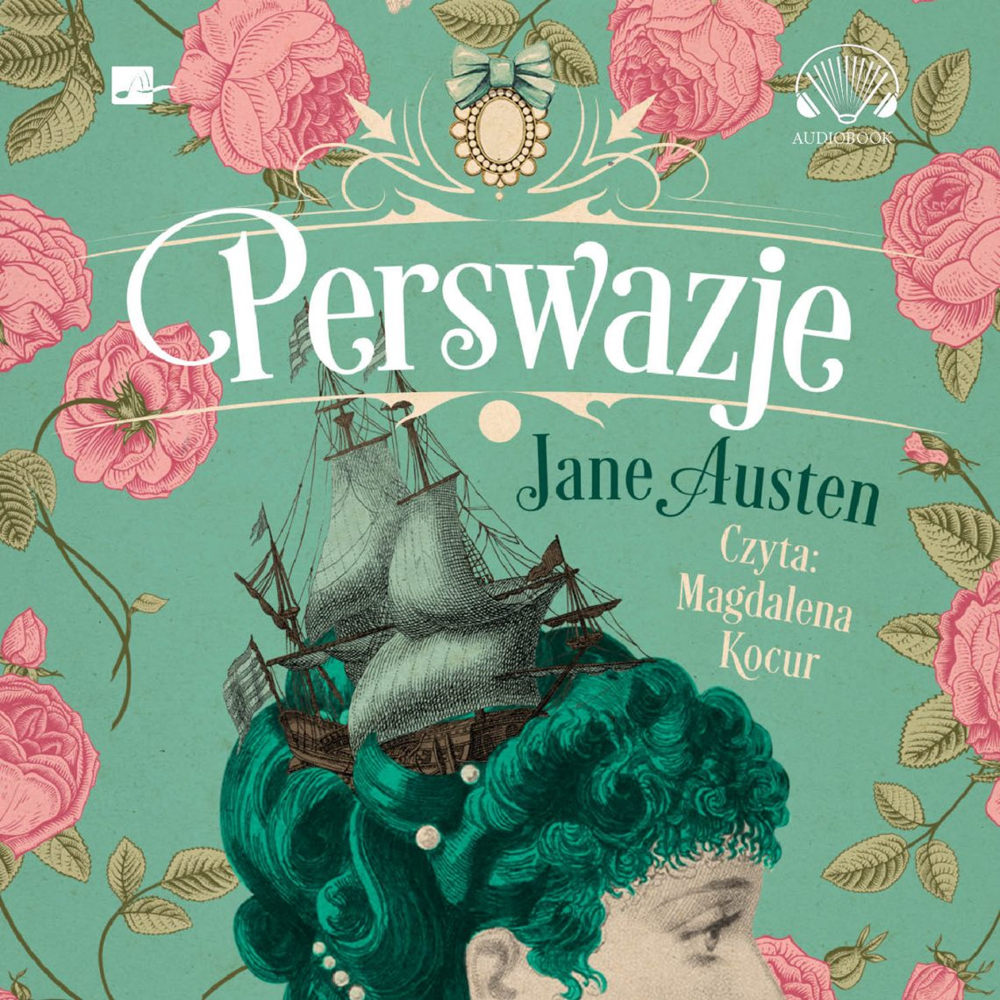

Najpopularniejsze powieści
"Rozważna i romantyczna"

Rozważna i romantyczna (ang. Sense and Sensibility) – pierwsza opublikowana powieść angielskiej pisarki Jane Austen, wydana w 1811 roku. Rozważna i romantyczna jest najbardziej zbliżoną do romansu powieścią Austen, choć charakterystyczne dla tej pisarki trafne obserwacje ówczesnej obyczajowości, humor i interesujące portrety psychologiczne bohaterek sprawiły, że książka ta cieszy się...
Czytaj wiecej"Duma i uprzedzenie"

Duma i uprzedzenie (ang. Pride and Prejudice) – powieść angielskiej pisarki Jane Austen wydana w 1813 roku. Złożona z 61 rozdziałów Duma i uprzedzenie, napisana w konwencji romansu, jest jednocześnie jedną z pierwszych powieści społeczno-obyczajowych. Autorka ukazuje życie angielskich wyższych sfer...
Czytaj wiecej"Mansfield Park"

Mansfield Park – powieść angielskiej pisarki Jane Austen, wydana w 1814 roku. Opowiada o losach Fanny Price, skromnej i cichej, niezamożnej dziewczyny wychowywanej w domu zamożnych krewnych – tytułowej posiadłości Mansfield Park. Mansfield Park ukazał się jako trzecia powieść Jane Austen, po cieszących się ogromną popularnością Rozważnej i romantycznej i Dumie i uprzedzeniu. Mansfield Park otwiera drugi okres w twórczości...
Czytaj wiecej"Perswazje"
Perswazje (ang. Persuasion) – powieść obyczajowa angielskiej pisarki Jane Austen wydana w 1817 roku (pośmiertnie). Jest to jednocześnie portret szlachty angielskiej początku XIX wieku oraz interesujący romans, zapowiadający późniejszą powieść psychologiczną. Perswazje to najpóźniejsza powieść Jane Austen. Na tle poprzednich wyróżnia się bardzo subtelnym i wnikliwym rysunkiem psychologicznym...
Czytaj wiecej